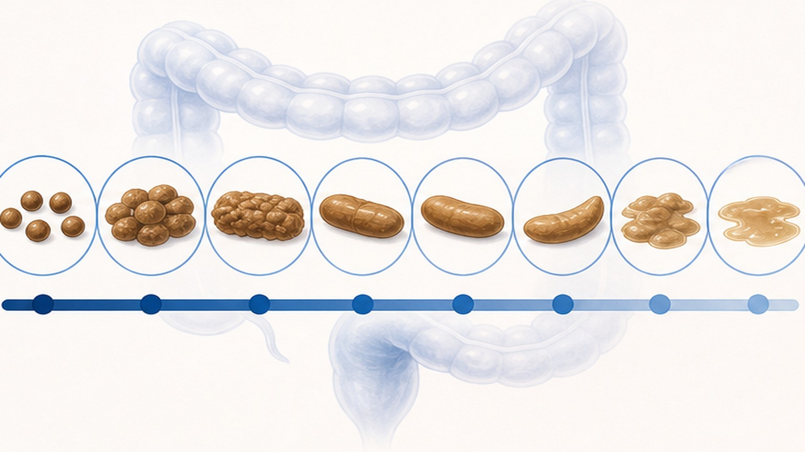
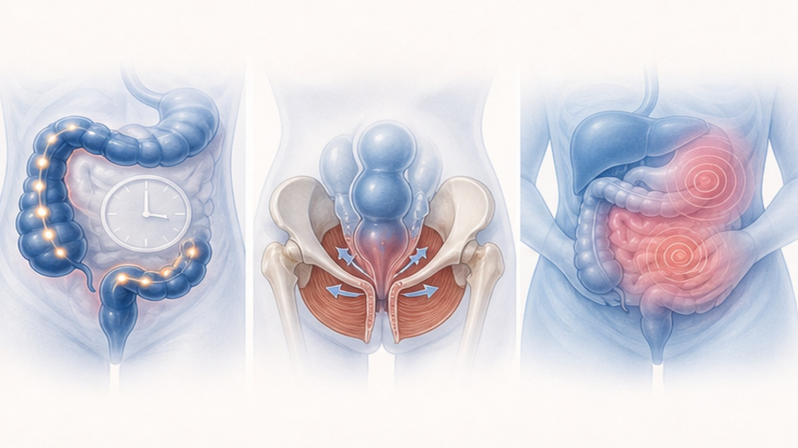
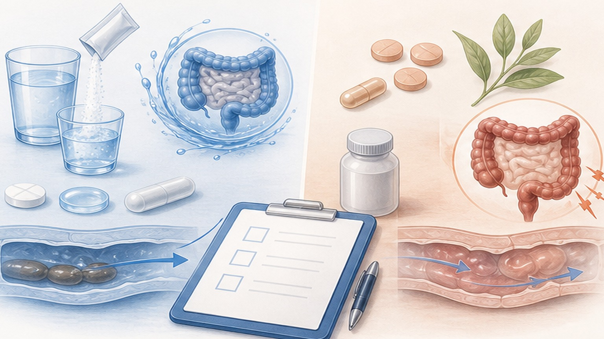
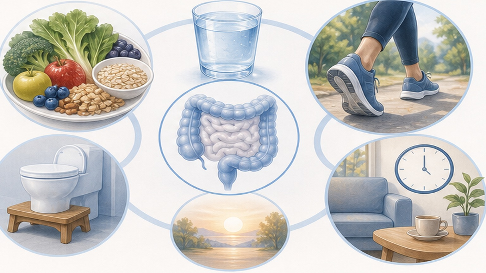

만성변비,
제대로 알고 치료하기
Rome IV 진단부터 안전한 약물·식이·생활습관까지 — 편안한 배변을 위한 가이드
만성변비 (Chronic Constipation) 란
단순한 변 횟수의 문제가 아니라 "편하게 완전히 비우지 못하는 상태" 입니다
힘주기·딱딱한 변·잔변감 등 배변과 관련된 불편이 3개월 이상 지속될 때 만성변비로 진단합니다 (Rome IV).
매일 보지 못해도 정상일 수 있고, 매일 봐도 만성변비일 수 있습니다. 핵심은 횟수가 아니라 "편안함"과 "완전 배출"입니다. 6개월 전부터 증상이 시작되어 최근 3개월간 아래 기준 중 2개 이상에 해당하면 진단됩니다.
매일 보지 않아도 건강합니다
배변 횟수보다 "편안함과 완전 배출"이 더 중요한 지표입니다
나의 변은 어떤 타입인가요?
Bristol 대변 형태 척도 (Bristol Stool Scale) — 치료 목표는 Type 3-4

반드시 진료받아야 하는 경고 신호
아래 증상이 하나라도 있으면 단순 변비로 판단하지 말고 대장내시경 등 추가 검사가 필요합니다
만성변비의 3가지 아형 (Subtypes)
같은 변비라도 원인과 치료법이 다릅니다 — 정확한 분류가 효과적인 치료의 시작

안전한 변비약 vs 주의가 필요한 변비약
모든 변비약이 같지 않습니다 — 장기 복용 가능한 약과 단기·구제용 약을 구분하세요

근거가 있는 식단 가이드
강력 권장 식품과 권장하지 않는 식품 — 효과 강한 것부터 차례로 시도하세요
- 그린 키위 2개 / 일 (껍질 제거) — RCT 효과 입증
- 차전자피 (Psyllium) — 물 200mL 이상 함께
- 푸룬 (건자두) 50–100g / 일 — IBS에는 부적합
- 가용성 섬유질이 풍부한 채소 · 과일
- 프로바이오틱스 (B. lactis) — 4주 이상 보조적
- 충분한 수분 (탈수 교정 목적)
- 밀기울 (Bran) — 가스 · 팽만 악화 가능
- 이눌린 — 고FODMAP, IBS-C에서 팽만 유발
- 알로에 전잎 · 숙변 제거 차 (자극성 하제)
- 다이어트 차 · 디톡스 차 (안트라퀴논)
- Docusate (변연화제) — 위약 대비 효과 미입증
- 억지로 많은 물 섭취 (효과 근거 부족)
생활습관 6가지 — 약보다 중요한 일상의 변화
배변 습관 재훈련 (Bowel Training) — 작은 실천이 큰 변화를 만듭니다

기본 치료가 안 통할 때 — 전문의 영역
식이 · 생활습관 · 일반 하제로도 호전 없을 때 따르는 단계별 진료 경로
오늘 꼭 기억할 핵심 7가지
변비는 참는 병이 아니라 치료하는 병입니다 — 일상에서 실천해 보세요
변비는 참는 병이 아니라,
치료하는 병입니다
편안한 배변을 위해 함께 고민하고 결정하겠습니다 — 궁금한 점은 언제든 진료 시 질문해 주세요
광교중앙로 298, 4층
5대암 검진
같은 자료를 다시 볼 수 있어요